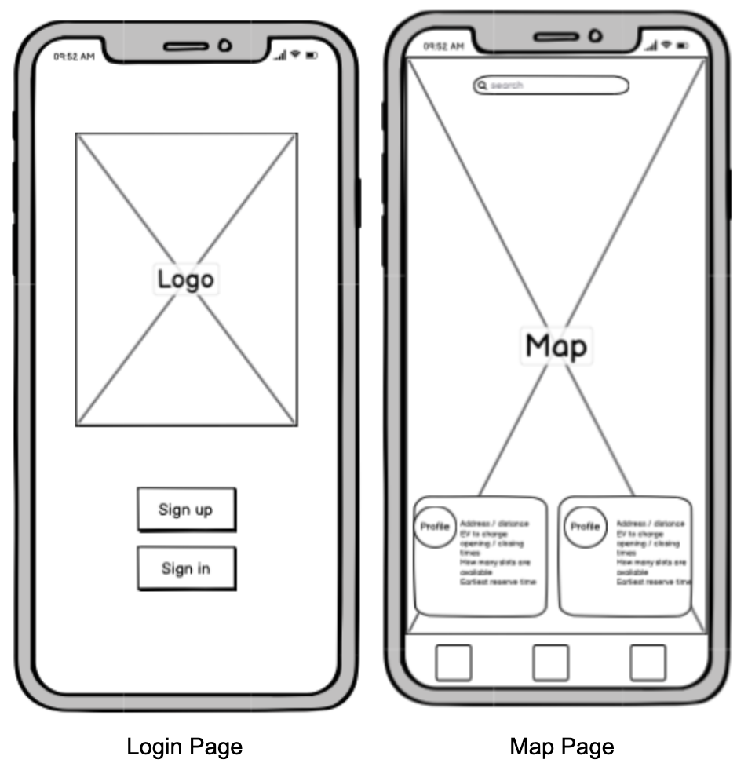
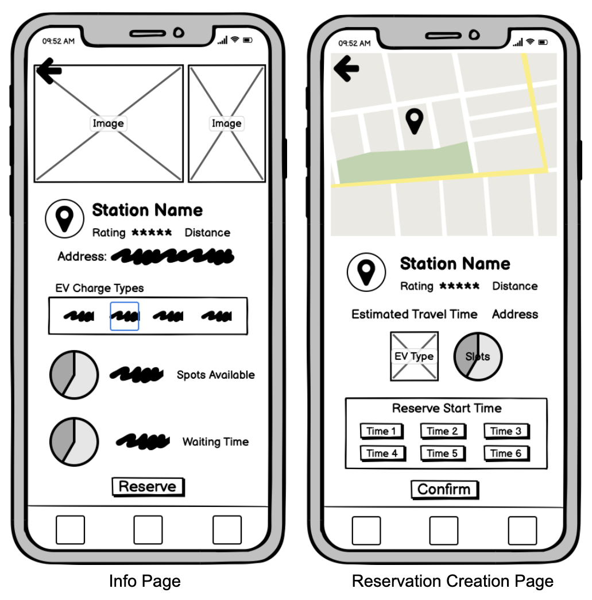
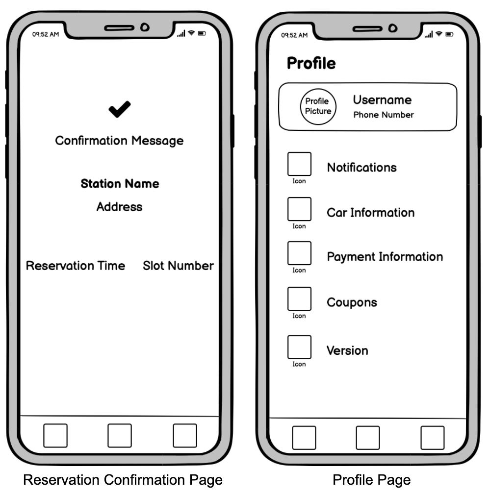
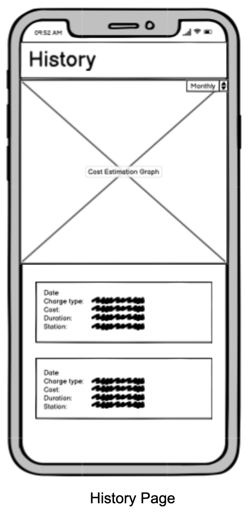

This project is about iteratively designing an interface for a startup with feedbacks from class and user testing. Me and three other students chose a startup called Statique, a company that allows individuals and buildings to provide EV (electric vehicle) charging points through its app to to mitigate air pollution from automobile exhaust by encouraging the use of EVs.
First, we brainstormed different sketches for the startup and combined them to create a low fidelity prototype:    
Then we combined the sketches and create a interactive high fidelity mockup of the design and made revisions with feedbacks from classmates:
Finally, we had random users to use the mockup and tell us about the experience:
We observed that users typically made little to no errors and have no trouble navigating through the process on their first try. Some of them are confused as to why a payment component of app is needed, but that is due to the fact that the business model of Statiq was not fully communicated to users as background knowledge before they started the test. The fact that most users were able to successfully complete the task on the first try, some even without needing to consult the sub-tasks, shows that the interface is intuitive enough and has good affordances that allows users to know how to go from one step to the next. Some problems, such as more clarity regarding what the navigation function would look like, was also brought up during user testing.
Besides changing the navigation text instructions from "Swipe Up to Naviage" to "Swipe Up to Enter Navigation Mode" to make it clear that navigation is a separate functionality that is different than the maps homepage, we could also consider adding an additional screen in our hi-fi mockup to showcase what the specific page would look like to users. We have also included the names of different functions under the icons in the bottom navigation bar, so the purpose of each icon and where it might take the user would be clear even to people who are using the application for the first time.